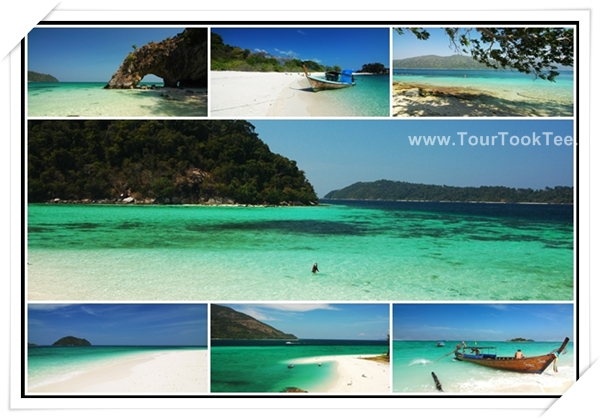

 |
| อันดับ 7 : เกาะตะรุเตา เกาะงามแห่งอันดามัน ตั้ง อยู่ในพื้นที่อุทยานแห่งชาติตะรุเตา จ.สตูล ได้รับความสนใจจากคู่รักในการมาเที่ยวพักผ่อนอยู่เสมอ เนื่องจากมีธรรมชาติที่สวยงามคงอยู่ในระดับที่เกือบจะสมบูรณ์แบบ จนได้รับยกย่องให้เป็นมรดกแห่งอาเซียน โดยหมู่เกาะตะรุเตานี้ประกอบเกาะอีก 51 เกาะ ซึ่งมีเกาะขนาดใหญ่อยู่ 2 เกาะด้วยกันคือ เกาะตะรุเตา และ เกาะอาดัง-ราวี ซึ่งที่ตะรุเตานี้จะมีมุมโรแมนติกอยู่หลายมุมให้คู่รักได้สวีทกัน เช่น อ่าวพันเตมะละกา ซึ่งมีหาดทรายขาวสะอาด และเป็นแหล่งชมพระอาทิตย์ตกน้ำที่สวยงาม ใกล้ๆ กันนั้นก็จะมีจุดชมวิวทิวทัศน์ของเกาะชื่อ “ผาโต๊ะบู” ส่วนเกาะอื่น ๆ ก็มีความสวยงามไม่แพ้กัน ทั้งเกาะอาดัง-ราวี เกาะหลีเป๊ะ เกาะกลาง และเกาะไข่ บริเวณนี้มีแนวปะการังที่สวยงามมาก โดยเฉพาะเกาะไข่นั้นมีซุ้มประตูหินธรรมชาติ ที่โดนกัดกร่อนจนทะลุเหมือนเป็นประตู กลายเป็นสัญลักษณ์ของการท่องเที่ยวจังหวัดสตูล คู่รักหลายๆ คู่นิยมมาจูงมือกันเดินลอดประตูหินแห่งนี้ |